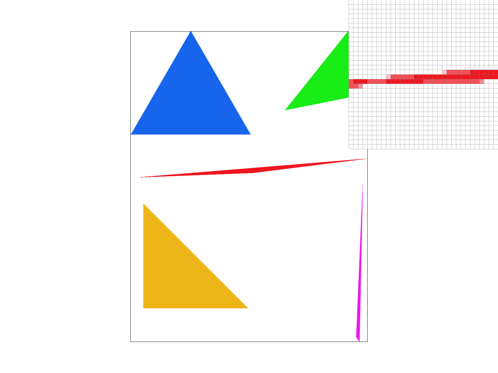
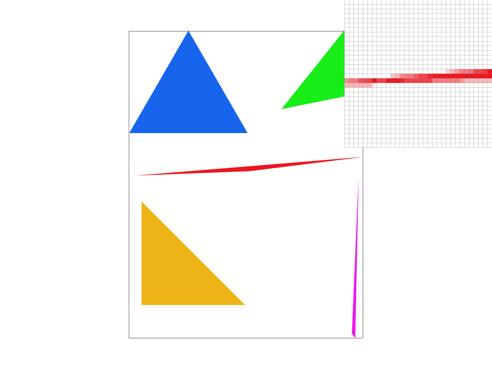
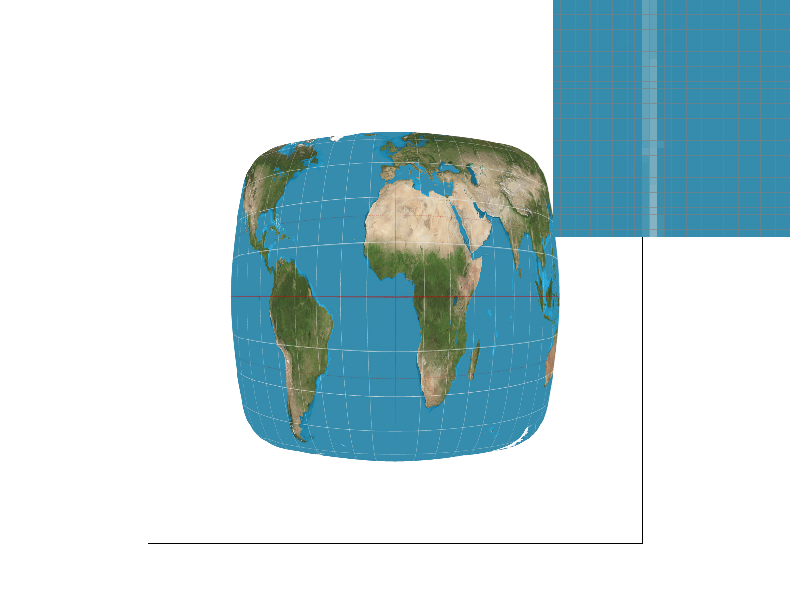
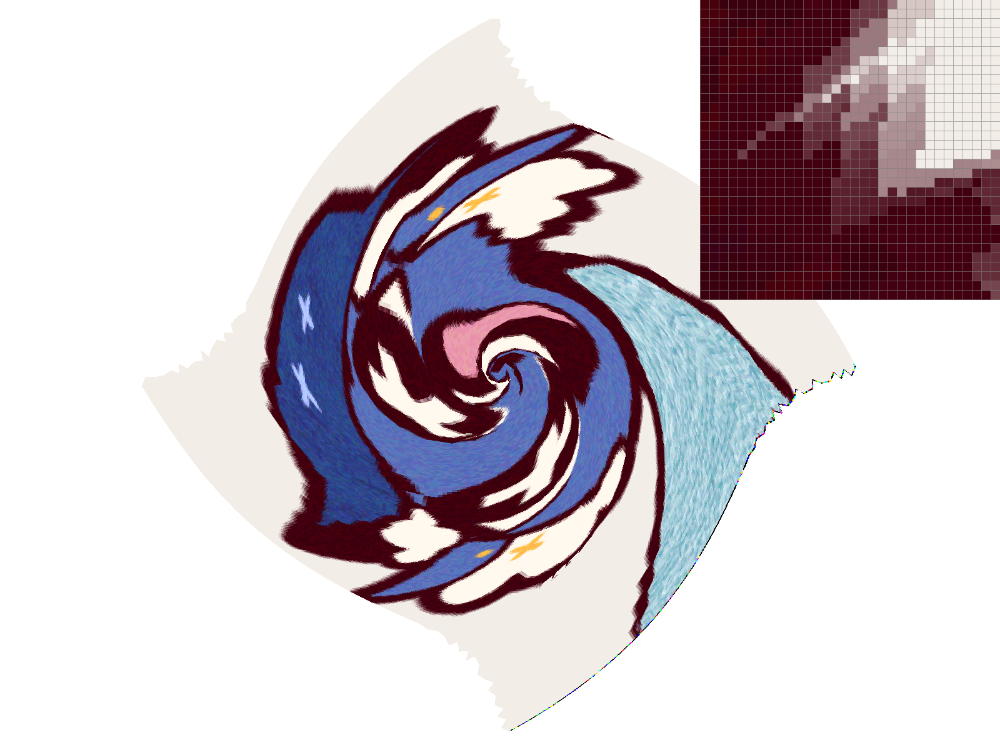
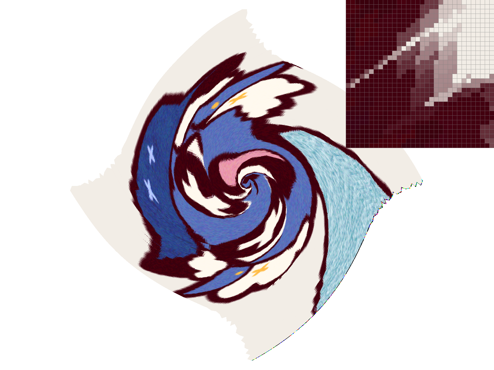
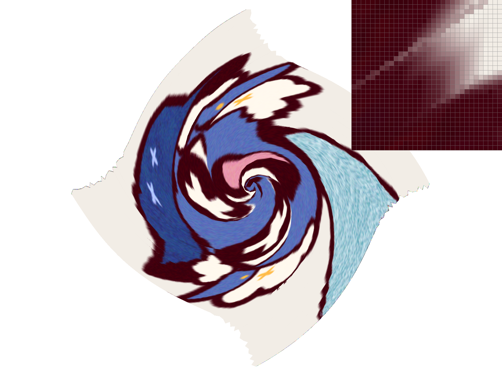

Overview
In this homework, I implemented a simple rasterizer capable of drawing triangles and applying textures to them. In the process, I learned about how rasterization, antialiasing, texture mapping, mipmap, supersampling, and barycentric coordinates work.
Section I: Rasterization
Part 1: Rasterizing single-color triangles
The following steps are followed to rasterize a triangle:
- Calculate the bounding box of the triangle by finding the leftmost, rightmost, topmost, and bottommost vertices.
- Loop through all the pixels in the bounding box of the triangle
- For each pixel, check if it lies within the triangle. (I used
insidefrom triangulation.cpp, though I modified it to work regardless of winding order.) - If a pixel lies within the triangle, color it with the color of the triangle
This algorithm is no worse than checking every pixel in the bounding box of the triangle, because it is exactly that.
Part 2: Antialiasing triangles
To implement supersampling, I used a sample buffer that is sample_rate times as large as the framebuffer. A function called resolve_to_framebuffer is called at the end of the rasterization process to average the colors of the supersamples and write them to the framebuffer.
My supersampling algorithm works by iterating over the supersamples for each pixel. Inside-checking is done for each supersample, and the sample buffer is filled accordingly.
Here is an example of the same SVG rasterized with different sample rates. The reason the sample rate increasing makes the image look better is that supersampling allows for fractional pixel coverage by averaging the colors of the supersamples, which results in less jagged edges.
|
|

|

|
Part 3: Transforms
For this task, I implemented rotation, translation, and scaling. Here's a sample image showcasing the effects of these transformations. I made the cubeman dance!
Section II: Sampling
Part 4: Barycentric coordinates
Barycentric coordinates represent a point P as the linear combination of the vertices A, B, and C of a triangle.
Barycentric coordinates are used in graphics because they make it easy to interpolate values across a triangle if you just know what those values are at the vertices.
Consider the following image, sourced from Wikipedia:
To rasterize a triangle like this, it is adequate to know what the colors are at the vertices. Then, using barycentric coordinates, for any point on the inside of the triangle, you can use the barycentric coordinates as weights used to combine the vertex colors.
Here’s a sample image rasterized by my rasterizer using barycentric coordinates to interpolate colors across triangles:
Part 5: "Pixel sampling" for texture mapping
A common problem in graphics is mapping a texture like an image onto a surface. The texture and the surface will not correspond in their dimensions, so some kind of sampling strategy is necessary to map points on the surface to points on the texture.
A few common strategies for texture mapping are nearest-neighbor, bilinear, and trilinear sampling. I implemented these in my rasterizer.
In nearest neighbor, one simply finds the nearest pixel in the texture to the point on the surface. This is the simplest method, but it can result in aliasing.
In bilinear sampling, one takes the weighted average of the four nearest pixels in the texture to the point on the surface. This results in a smoother image.
Here’s 2 sample image rasterized by my rasterizer using texture mapping, nearest on the left and bilinear on the right, 1x1 supersampling on the top row and 4x4 supersampling on the bottom row:
|
|
|
|

|
|
Notice how the lines in the 1x1 nearest neighbor image are faint, while the lines in the 1x1 bilinear image are smooth.
The differences are less stark in the 4x4 supersampling images, but the bilinear image is still smoother.
There will be large differences between nearest neighbor and bilinear sampling when the surface is much bigger or smaller than the texture, creating magnification or minification. In both cases, bilinear sampling will be smoother.
Part 6: "Level sampling" with mipmaps for texture mapping
To avoid aliasing due to minification, one can use mipmaps. Mipmaps are a series of textures, each half the size of the previous one, down to a 1x1 texture. When a point on the surface is much smaller than the texture, one can use mipmaps to sample from a smaller texture.
Different ways exist to pick the mipmaps to sample from. These are called level sampling strategies. One way is to pick the mipmap that is the closest in size to the surface. Another way is to pick the two mipmaps that are closest in size to the surface and interpolate between them.
I used a formula to calculate the mipmap level to sample from. The formula yields continuous values, which can then be used to either interpolate between two mipmaps or to pick the closest mipmap. The output of the formula has to be clamped to the range of mipmaps available, since the formula can yield negative values or values greater than the number of mipmaps.
Here's a source image:

And a rasterized version using texture mapping on different settings (L_ZERO, P_NEAREST; L_ZERO, P_LINEAR; L_NEAREST, P_NEAREST; L_NEAREST, P_LINEAR):
|

|
|
|

|

|
Performance (best first)
Pixel sampling. Memory: Nearest, bilinear. Speed: Nearest, bilinear. Quality: Bilinear, nearest.
Level sampling: Memory: Zero, nearest, linear. Speed: Zero, nearest, linear. Quality: Linear, nearest, zero.
Sample rates: Memory: 16, 4, 1. Speed: 1, 4, 16. Quality: 16, 4, 1.